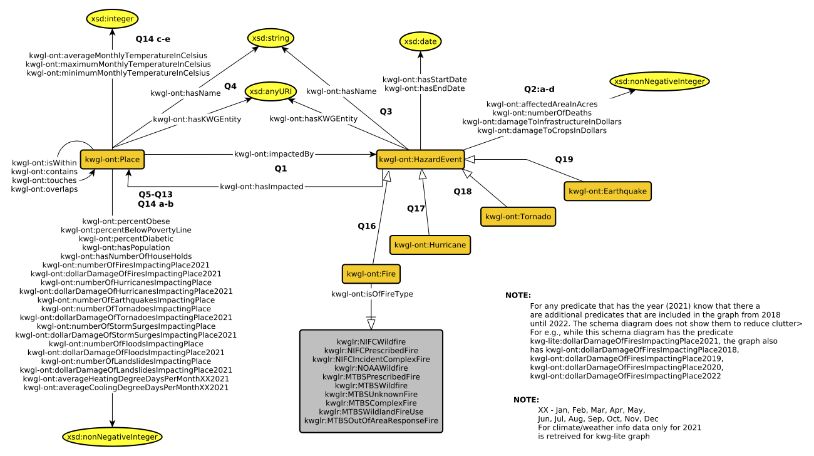

Know Where Panel

KnowWhereGraph is a massive knowledge graph with a rich and expressive schema. This comes with many benefits, insofar as it helps to capture provenance, lineage, and spatiotemporal context to the data, and other aspects relevant for expert-level applications. However, due to the size and complexity of the graph and its schema, this can result in a steep learning curve and usability obstacles for those who are not well versed in ontology, knowledge graphs, or SPARQL. On the other hand, for certain use cases a deep or rich ontological representation is not necessary, and, for certain types of users visualizing or navigating graph data values can be unintuitive. Finally, the use of the DGG can be a barrier itself, as it can result in long and expensive queries.

To address this, we have constructed a simpler version of KWG, reducing both the complexity of the schema (shown above) and number of triples (a reduction of four orders of magnitude); we call this graph: KnowWhereGraph-Lite (KWG-Lite). To easily view the entities within KWG-Lite, we've created KnowWherePanel.
We currently support two types of entitites within KWG-Lite, Hazards and Places. Each show the data pertinent to them in convenient and easily visualized panels, inspired by the Wikipedia & Wikidata infoboxes. By clicking on "Browse" you can see some examples. Search will allow for the targeting of specific Hazards or places.
Browse Search